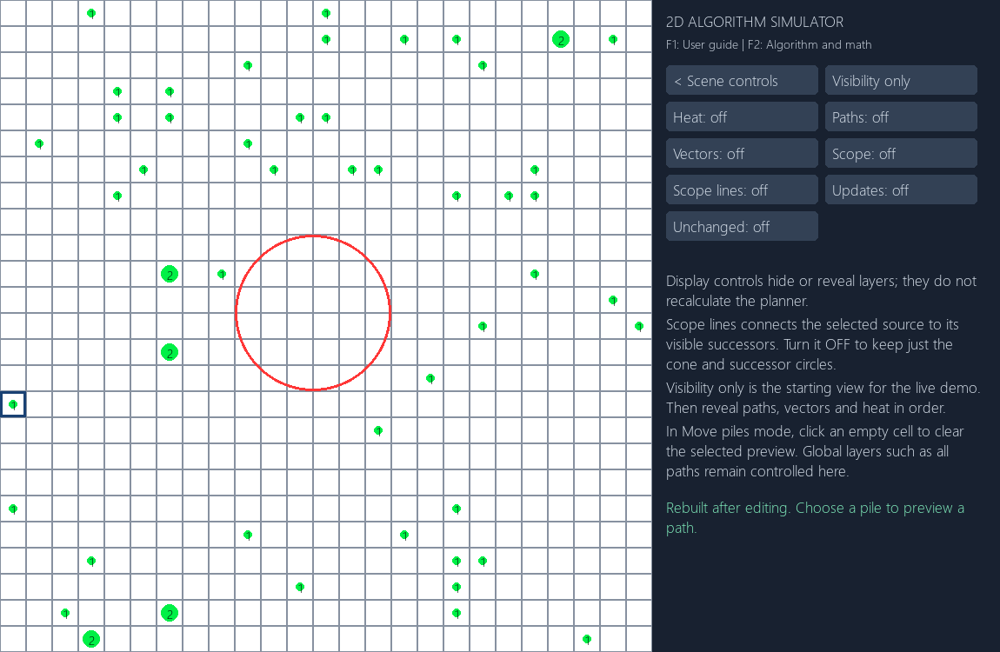
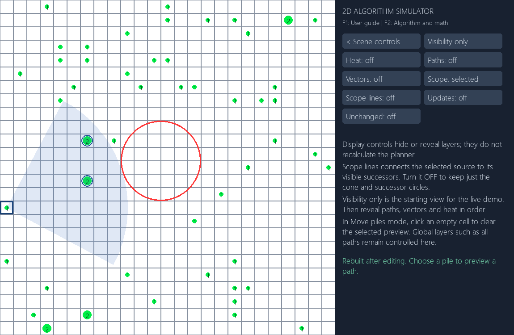
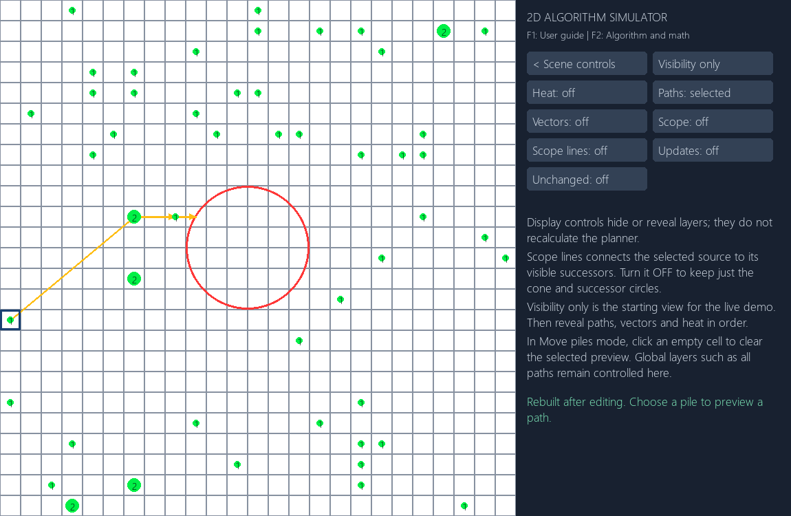
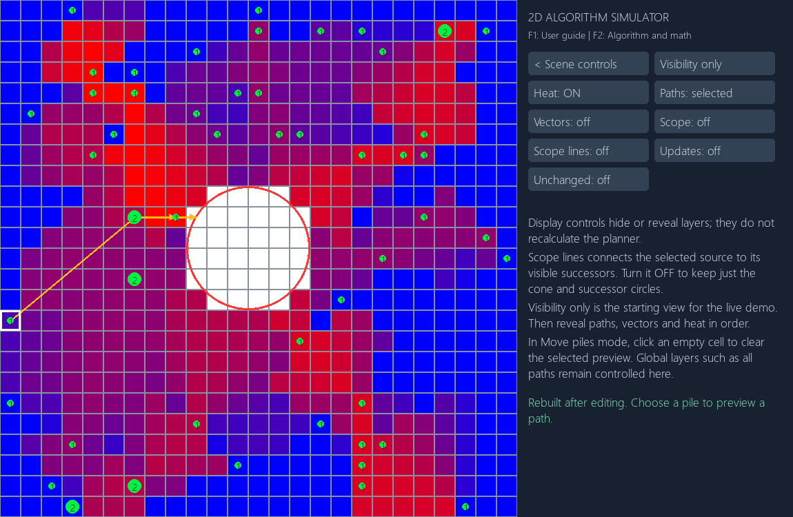
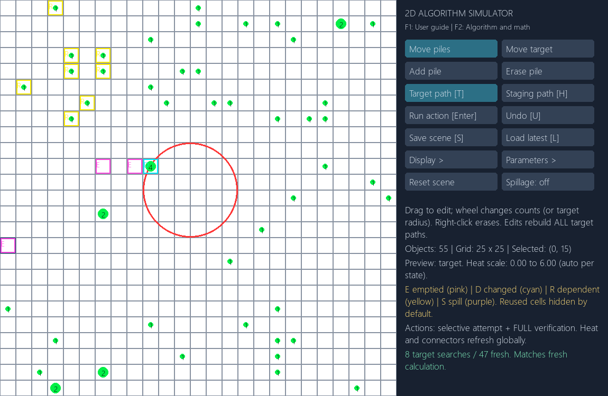

01 · 0–1 min
Planning with the environment
A shared representation connects material, candidate actions and execution.

Speaker notes
Show the pinned 55-object scene. Frame the complete thesis: 2D foundation, action selection, rover execution and shared operation. The live demonstration is one component of the talk.
02 · 1–3 min
Why material rearrangement matters
A useful push may deliver material or prepare a later collection.
Speaker notes
Use the broom-and-dustpan intuition. State the question before introducing the field. Keep the mission objective open; do not imply that high heat guarantees reduced time.
03 · 3–4 min
Relation to aggregate-forming planning
Build on the lab context while distinguishing the present representation.
Diagram or experiment evidence to add
Speaker notes
Briefly position Shaked et al. (2023). The current lab-inspired comparison is partial. Save detailed comparator fidelity for questions.
04 · 4–6 min
Cells and visible successors
A target-facing successor graph defines possible collection steps.

Speaker notes
Use the same source (0,15) as the live demo. Explain counts, cell centers, target angle 45 degrees, range gate 1 and monotone progress. The cone is not the whole eligibility rule. State that these are the pinned dense-scene settings, not the small corridor settings.
05 · 6–8 min
Candidate routes and shared continuations
Search collects material; nearer solved continuations can be reused.

Speaker notes
Trace (0,15) → (6,10) → (8,10) → (9,10), gathering four new objects. Explain raw count ranking, distance tie-breaking and the configured factor-2 target-length cap. Briefly show suffix reuse without claiming global optimality.
06 · 8–10 min
Directional value becomes heat
The field combines propagated route value and directional alignment.

Speaker notes
Introduce maximum propagation, normalized headings and one heat equation. Here own heat weight is 0 and alignment exponent is 1. Distinguish heat from local material and from predicted time savings. Pygame colors auto-rescale: use numerical values for before/after comparisons.
07 · 10–11 min
How staging uses the field
Heat and proximity identify possible intermediate destinations.
Diagram or experiment evidence to add
Speaker notes
Explain the 0.7 heat / 0.3 proximity anchor score and source/anchor heat thresholds. The live action will be a target push, chosen to make selective updating easy to follow. Staging policy evidence is discussed later; do not add a second live action here.
08 · 11–17 min
LIVE DEMO — reveal, execute, update
A changed scene can retain unaffected target paths while updating dependent sources.

Speaker notes
Talk minutes 11–17. Follow live_demo/DEMO_RUNBOOK.html: visibility 0:00–1:30; route 1:30–2:20; vectors/heat 2:20–3:10; execute once and inspect E/D/R 3:10–4:40; explain reuse 4:40–5:20; return to slides by 6:00. Source is (0,15), four new deliveries, 8 target searches versus 47 fresh. Full verification passes. Start seminar demo.cmd restores the pinned scene and display preset. Hard stop at minute 17; if behind, skip vectors. If a technical problem occurs, use the six saved screenshots instead of debugging. Keep spillage off and parameters fixed in the main demo.
09 · 17–19 min
The transport estimator is replaceable
Route geometry and material state feed a model that predicts deposits and yield.
Diagram or experiment evidence to add
Speaker notes
Describe the current curvature/load estimator, coefficient and threshold. Explain the replacement contract and sampling/capacity limitations. Spillage toggling is optional after-talk interaction, not part of the six-minute demo. Do not invent an observed retention result.
10 · 19–21 min
What the computational evidence establishes
Fewer target searches and measured runtime are different claims.

Speaker notes
Separate the live verified search-count reduction from the historical timing chart. Mark the latter historical. Mention the 96 sequence checks without presenting them as a general proof. Heat, propagation and staging rebuild globally; the editor also runs full verification. A clean timing study remains a separate evaluation.
11 · 21–22 min
From a useful path to an executed task
The 2D representation is the foundation for the later work.
Diagram or experiment evidence to add
Speaker notes
At minute 21 switch decisively to the rover pipeline. End the foundation block by minute 22. Next: approach/alignment/tracking, collision recovery, policies, lookahead, team operation and estimation.
12 · 22–26 min
Make a planned push executable
Approach, alignment, shovel operation and path following connect the field to the rover.
Diagram or experiment evidence to add
Speaker notes
Use a verified rover clip with planned and measured trajectories overlaid. Explain the phases of a push and why a useful 2D path is not automatically an executable motion. Show low-level tracking, alignment and completion/recovery decisions. Use advisor_demo_20261019/advisor_guide.html and the execution-signal inventory as evidence sources. Clip selection remains pending; this is substantive completed engineering, not merely future work.
13 · 26–29 min
Avoid collisions and recover progress
Execution must handle other rovers, blocked approaches and unfinished actions.
Diagram or experiment evidence to add
Speaker notes
Show a state sequence: approach conflict → yield or recovery → resume or reassign. Separate collision avoidance from task allocation, and delivery from final parking. Use research/multi_rover/AFTER_REPAIR_VALIDATION_20261017.md for a bounded validation example. Zero detected contacts in a tested cohort does not establish a universal safety guarantee. Select one logged recovery example; do not stage an unverified success.
14 · 29–32 min
Choose between delivery and staging
The same environment representation supports different action-selection policies.

Speaker notes
Return briefly to the side pile to explain the decision, then show evidence from the repaired highway and policy-mode studies. Sources: lab_experiments/HIGHWAY_REPAIRED_EXPERIMENT_RECORD_2026-10-03.md and POLICY_MODE_CONFIRMATION_FINDINGS_2026-10-04.md. Show the tradeoff between endpoint completion and limited time/travel budgets. These studies are already completed; selecting the final seminar graph is pending, not the existence of results. Preserve matched-cohort denominators and do not treat every added policy term as an improvement.
15 · 32–35 min
Look ahead to the next useful push
Predict a changed environment, replan, and evaluate a short action sequence.
Diagram or experiment evidence to add
Speaker notes
Extend the running example into a two-action tree: direct delivery versus stage then collect. Label this schematic until actual candidate scores are exported. Execute only the first real action and observe again. Discuss the 32-run pilot in research/lookahead/EXPERIMENT_REFERENCE_20261006.md: eight paired scenarios and one seed; deeper search has computation and spill costs and frequent fallbacks. It is preliminary evidence, not a general winner. Separate planning depth from accuracy of the successor model.
16 · 35–39 min
Share the environment between rovers
A common field supplies tasks; allocation and execution determine team behavior.
Diagram or experiment evidence to add
Speaker notes
Show one shared map, candidate tasks, assignment and reassignment. Use research/multi_rover/LARGE_RANDOM_CAMPAIGN_20261017.md: the 200-run allocation study compares normal and selective handoff on 100 matched pairs. It is not a controlled fleet-size speedup study. Discuss completion, contention, parking and operating limits. Retain the unresolved four-rover case as a limitation. Select a logged team clip and a matched allocation plot; do not claim a robust overall policy winner.
17 · 39–41 min
Estimate execution cost without fixing the objective
Timing estimates provide inputs for later decision criteria.
Diagram or experiment evidence to add
Speaker notes
Explain approach, alignment, pushing and overhead. Distinguish predicted from measured time and identify where calibration is weak. Keep the optimization criterion open. T_q, if shown, belongs to evaluation and means time to deliver fraction q. Timing is one foundation alongside retention and task feasibility, not the declared thesis objective.
18 · 41–44 min
Bring the evidence together
Evaluate the foundation, action selection and rover execution at their own levels.
Diagram or experiment evidence to add
Speaker notes
Use three columns: 2D computation; policy/rollout outcomes; rover/team execution. Reuse the completed highway, policy and allocation studies with their recorded limitations. Mark only genuine gaps as pending: matched selective/full timing, broader equivalence tests, retention calibration, final choice of illustrative clips and any remaining reference-control experiments. Final thesis emphasis and conclusions remain open for advisor discussion.
19 · 44–45 min
One framework, several levels of decisions
The heatmap is the foundation of the planning-and-execution story.

Speaker notes
Close with the chain: environment representation → candidate generation → action selection/lookahead → rover control → shared operation → updated observation. Summarize demonstrated benefits and operating limits from the selected evidence; do not invent a final experimental conclusion.